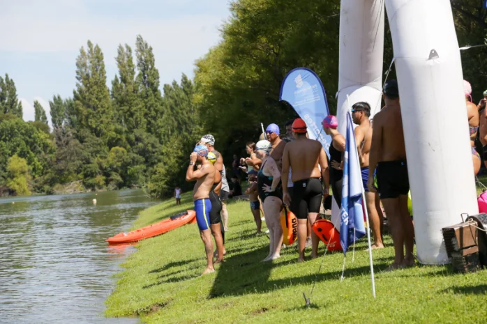
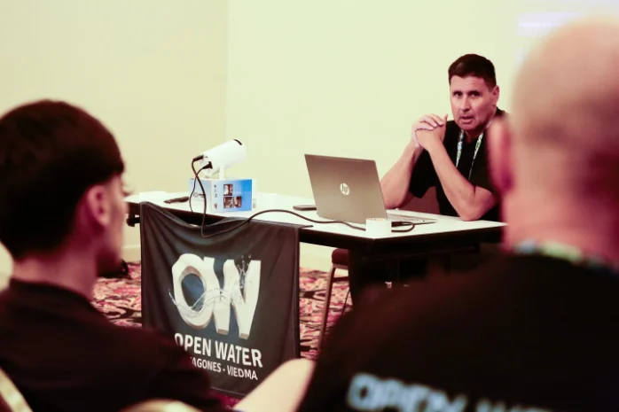
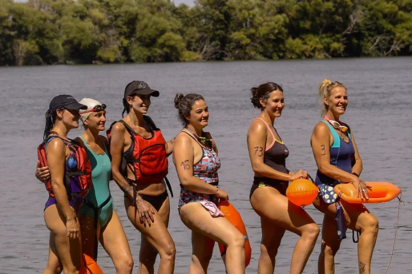
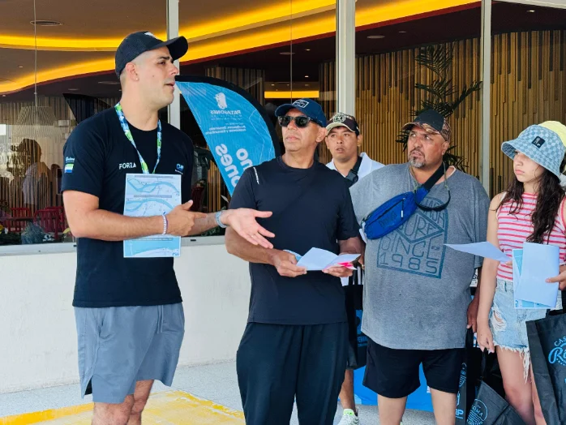
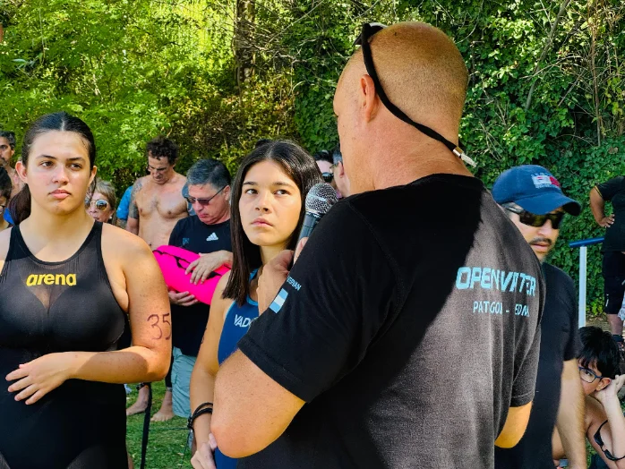

Más allá de las competencias, la comunidad Open Water se mueve todo el año: entrenamientos en el río, clínicas abiertas, encuentros sociales y preparación para cada desafío.

SALIDAS A NADAR EN EL RÍO
Entrenamientos grupales en aguas abiertas sobre el Río Negro, para tomar contacto con la corriente, la temperatura y la técnica de nado en río.

CLÍNICAS ABIERTAS Y PÚBLICAS
Clínicas de nado abiertas a toda la comunidad, para mejorar técnica, respiración y seguridad en aguas abiertas, sin importar el nivel.

JUNTADAS SOCIALES AL AIRE LIBRE
Encuentros a la orilla del río para compartir mate, charla y buena onda entre nadadores y familias de la comunidad.

ELONGACIÓN Y ESTIRAMIENTO
Sesiones de movilidad, elongación y estiramiento para prevenir lesiones y llegar en forma a cada salida y competencia.

PLANES DE COMPETENCIA
Planificación y acompañamiento para preparar el circuito Summer y Winter Open Water, con objetivos por distancia y nivel.